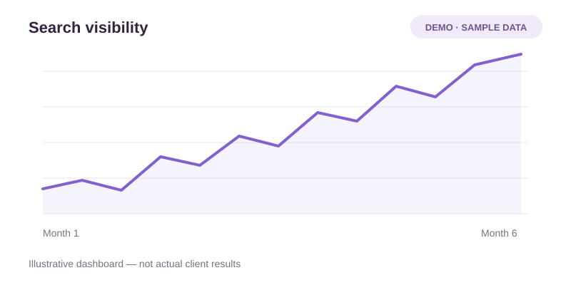
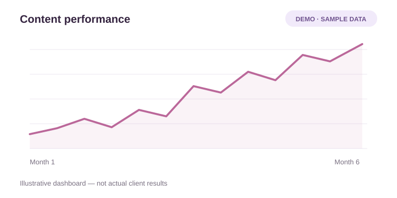
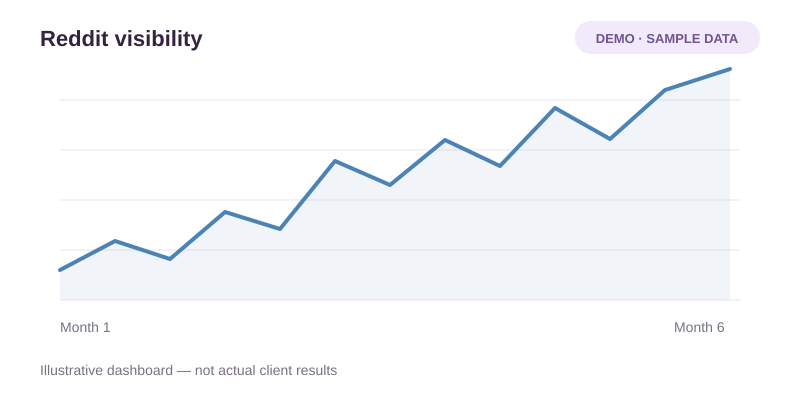

SEO content & visibility
Build your search presence with content that answers the questions your audience is already asking.
Focus: relevant topics, useful articles, and clear information about your business.
Discuss SEO visibilityBuild your website’s search presence and your brand’s visibility in relevant Reddit conversations. Scale Xpert brings SEO content, authority building, and Reddit brand mentions into one ongoing service.

Scale Xpert is autopilot software for SEO and Reddit visibility. Our monthly offering brings together content, authority building, and relevant brand mentions.
Build your search presence with content that answers the questions your audience is already asking.
Focus: relevant topics, useful articles, and clear information about your business.
Discuss SEO visibilityPut your brand into relevant discussions where people compare options, ask questions, and share experience.
Focus: context, useful contributions, and respect for each subreddit’s rules.
Discuss Reddit visibilitySupport your website’s visibility through relevant referring domains and contextual placements.
Focus: topic fit, editorial quality, and links that offer value to readers.
Explore authority workPresent your expertise clearly on the pages that explain your brand, services, and answers.
Focus: clear content and supporting evidence; the Authority plan includes an AI search visibility review.
Discuss AI visibilityStart with your website and the audience you want to reach. Choose the monthly scope that fits your next step.
Tell us what your business offers, who it serves, and where SEO or Reddit visibility matters most.
Compare content, referring domains, Reddit mentions, and placements across Access, Growth, and Authority.
Assess the delivered work alongside your search and brand visibility signals, then discuss the next priorities.
Explore sample visibility dashboards and a historical Search Console chart from previous client work. Demo images use illustrative data; the historical chart is not a benchmark for the software.
Dates, pages changed and market conditions all matter when interpreting a graph. Use the evidence for your website to assess progress and decide what deserves attention next.
Discuss your visibility goals


Real feedback from entrepreneurs, founders, and professionals who worked with us and experienced strong communication, professionalism, and measurable SEO growth. Feedback about Paul and the team from previous client work. These reviews describe that experience; they do not measure the autopilot software’s performance.
“Paul is a very serious and dedicated person. Having known him for a few years, I can attest to his strong commitment to his work. He is always attentive and highly invested in his company. I recommend him if you need advice.”
“Paul helped me carry out prospecting campaigns on LinkedIn. He also did some work restructuring my profile. I recommend Paul and his team for their seriousness, their friendliness and their commitment to the project.”
“I recommend Paul! Energetic, enterprising and determined, he is aware of the challenges of his business and does everything possible to achieve his goal: helping businesses, which he does very well. He is reliable and serious, which is a real asset.”
“Paul is a serious person who keeps his promises. He is also a good listener, honest, and offers excellent advice. I recommend him.”
“Paul is a trustworthy, responsible, and highly dedicated individual. Thanks to his thoroughness and the quality of his work, he consistently delivers excellent results. I highly recommend him.”
“Paul is a highly qualified, competent, and passionate individual. I recommend him.”
“Paul is a very good listener who knows how to adapt to all types of people and situations while remaining true to his down-to-earth nature. His versatility is a real asset.”
Compare the content, authority, and Reddit mention quantities in each plan. Final deliverables and terms are confirmed for your website.
A starting scope for SEO content and Reddit brand visibility.
More content, relevant authority work, and Reddit brand mentions.
A broader scope for SEO, Reddit visibility, and AI search readiness.
The quantities above come from the supplied draft package reference. Final scope, quality criteria, billing terms and availability are confirmed in a written proposal. Rankings and AI citations are not guaranteed.
Join Scale Xpert, a curated community for high-quality backlink exchange.
Connect directly with verified SEO peers, website owners, and digital growth professionals. Skip cold outreach and build meaningful link partnerships through a trusted network.
A curated SEO community where website owners can find relevant partners, exchange guest posts, compare quality signals, and grow authority through trusted relationships.
views on posts from Scale Xpert
Team-reported cumulative post views. This is reach, not website traffic or client results.Instead of emailing hundreds of websites, users meet site owners who are already open to collaboration.
Members compare niches, traffic, and authority before deciding whether a backlink opportunity makes sense.
The community supports backlink and guest post exchanges that help users earn contextual links.
Scale-Xpert encourages relationships, link-worthy content, outreach, and long-term collaboration.
Strong backlinks come from relevant, authoritative websites, appear naturally, and provide real reader value.
Enter the community and choose your interest.
Share your site, niche, and SEO metrics like DA, DR, or traffic.
Connect with website owners and agree on backlink placements directly.
Bonus: New members can receive their first 3 backlink opportunities.
Learning how to use AI for broken link building can help beginners find dead links, organize backlink opportunities, and write better outreach without fully automating the process. The goal is not to let AI build backlinks for you. Instead, use AI to speed...
If you want to grow your website’s visibility and authority, guest posting is one of the most effective SEO strategies to consider. In simple terms, guest posting means writing and publishing an article on another website or blog. In return, the author...
A bid strategy in Google Ads is the automated or manual rule that determines how much your campaign bids in each ad auction and under what conditions those bids are adjusted. Your bid strategy is one of the most consequential campaign settings you configure,...
AI Overviews on branded searches can introduce your business through someone else's content before a customer visits your website. Therefore, ranking first for your brand name is only one part of the visibility question: you also need to inspect...
SEO visibility and Reddit visibility, with a clear monthly scope.
Scale Xpert is autopilot software for SEO and Reddit visibility. Its monthly offering covers SEO articles, relevant referring domains, Reddit brand mentions, and backlink placements.
Helping people discover your brand in relevant Reddit conversations. Contributions should offer useful context and follow each subreddit’s rules. The plan cards show the proposed monthly brand mention quantities.
Access, Growth, and Authority have different content, link, and Reddit mention quantities. Authority also includes an AI search visibility review. Your proposal confirms the final deliverables, quality criteria, and terms.
No. Rankings, traffic, Reddit reach, and AI citations depend on factors beyond the delivered work. Review the agreed scope and actual visibility signals over time.
Choose a plan to enquire about, or send your website, target audience, and visibility goals through the contact page.